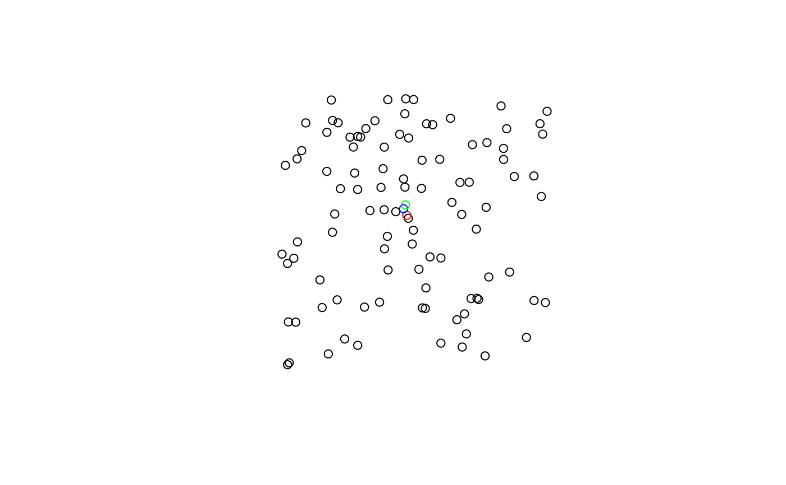

Given an sfc object containing points, calculate a measure of central tendency.
Usage
center_mean(geometry, weights = NULL)
center_median(geometry)
euclidean_median(geometry, tolerance = 1e-09)Arguments
- geometry
an sfc object. If a polygon, uses
sf::st_point_on_surface().- weights
an optional vector of weights to apply to the coordinates before calculation.
- tolerance
a tolerance level to terminate the process. This is passed to
pracma::geo_median().
Details
center_mean()calculates the mean center of a point patterneuclidean_median()calculates the euclidean median center of a point pattern using thepracmapackagecenter_median()calculates the median center it is recommended to use the euclidean median over the this function.
See also
Other point-pattern:
std_distance()
Other point-pattern:
std_distance()
Examples
if (requireNamespace("pracma")) {
# Make a grid to sample from
grd <- sf::st_make_grid(n = c(1, 1), cellsize = c(100, 100), offset = c(0,0))
# sample 100 points
pnts <- sf::st_sample(grd, 100)
cm <- center_mean(pnts)
em <- euclidean_median(pnts)
cmed <- center_median(pnts)
plot(pnts)
plot(cm, col = "red", add = TRUE)
plot(em, col = "blue", add = TRUE)
plot(cmed, col = "green", add = TRUE)
}
#> Loading required namespace: pracma
